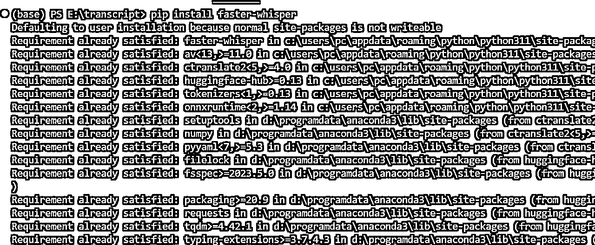
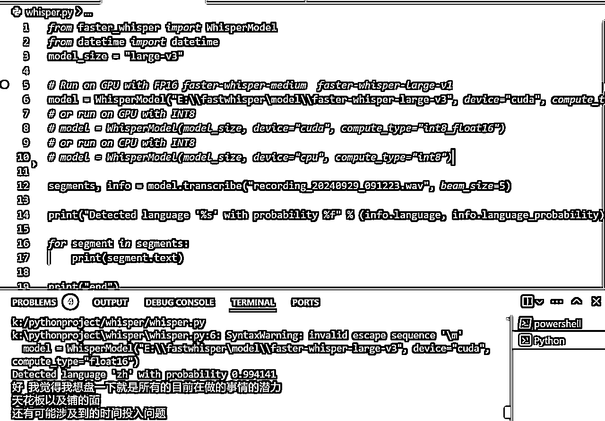
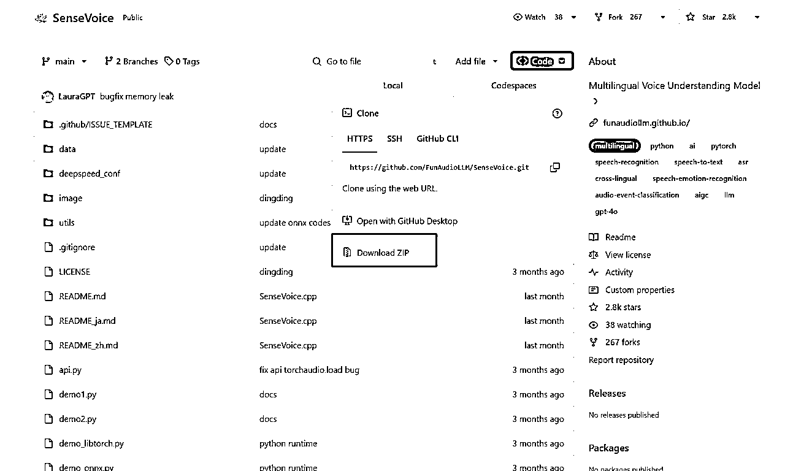
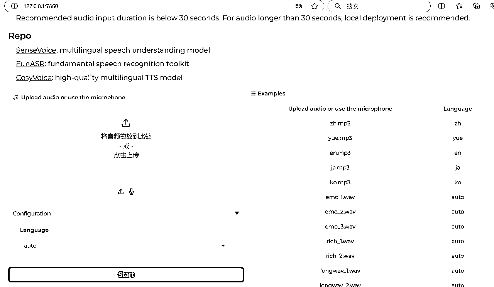
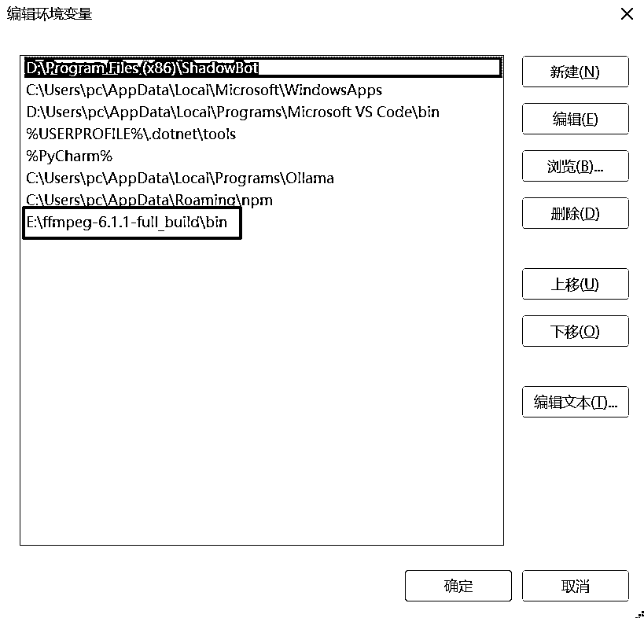
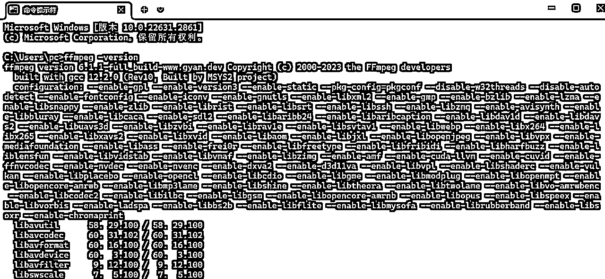
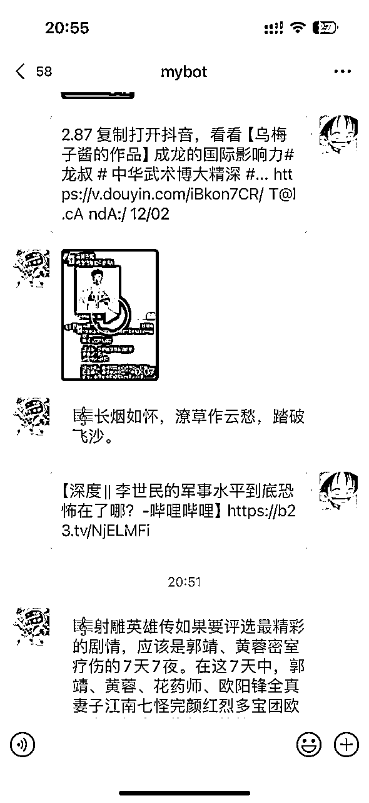
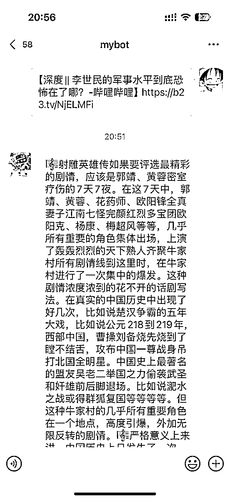

来源：https://ia0969wpr2.feishu.cn/docx/SPnXd5bDUoQKrBxLVFVcXYFCnrh
在短视频创作领域，紧跟热点、分析爆款文案至关重要。但是利用第三方如轻抖、通义等只能逐条提取视频文案，效率低下，难以应对批量采集批量提取的大规模数据要求。接下来我将分享我的工作流，如何通过本地部署 利用 whisper 或 sensevoice 实现日均提取抖音/小红书/B站视频号等视频文案 2 万+条。
这套流程效率极高。以使用sensevoice为例，在我的 4070Ti super 显卡上，处理一条抖音小红书视频通常只需3-5秒，B站视频较长30秒内也可以转录完成。在开启并发的情况下，单日最多处理约2.6万条各类平台视频，总计超1000小时的数据。
为了保证文案提取的效率和速度，建议使用具备一定性能的硬件设备：
首先我们要安装faster-whisper 或 sensevoice，选一即可。
下面是详细的安装教程
faster-whisper地址：https://github.com/SYSTRAN/faster-whisper
为了简单，我们直接从PyPI安装即可，就可以直接在脚本中使用了。我们执行：
pip install faster-whisper
如下即为安装完成

运行官方示例脚本，首次加载会下载对应模型，这里我自己使用的large-v3，这个模型参数大，准确率相对最高，但是转录速度也最慢，4分钟的视频要20S左右才能转录完成，相比之下sensevoice从来不会超过5S，当然whisper的准确率会比sensevoice高一些。
这里注意，如果你本地网络不好的话，可以自己先从hugging face上面下载模型，然后本地加载，
from faster_whisper import WhisperModel
model_size = "large-v3"
# Run on GPU with FP16
model = WhisperModel(model_size, device="cuda", compute_type="float16")
# or run on GPU with INT8
# model = WhisperModel(model_size, device="cuda", compute_type="int8_float16")
# or run on CPU with INT8
# model = WhisperModel(model_size, device="cpu", compute_type="int8")
segments, info = model.transcribe("audio.mp3", beam_size=5)
print("Detected language '%s' with probability %f" % (info.language, info.language_probability))
for segment in segments:
print("[%.2fs -> %.2fs] %s" % (segment.start, segment.end, segment.text))
这时我们运行脚本，转录一条测试数据，发现已经转录成功了。

sensevoice 安装相比会比较麻烦一些，首先我们进入到项目地址 https://github.com/FunAudioLLM/SenseVoice
一、使用git克隆代码
git clone https://github.com/FunAudioLLM/SenseVoice.git
如果本机没有有git，那么直接download zip也是可以的

二、创建环境和安装三方库:
下载地址: https://docs.anaconda.com/miniconda/
如果安装成功，输入conda --version，能返回conda版本号
2.创建虚拟环境、下载三方库:
conda create -n sensevoice python=3.8 conda activate sensevoice
在conda环境下执行以下命令安装第三方库
pip install -r requirements.txt
等待安装完成，我们就可以启动web ui了，启动完成后使用浏览器打开 http://127.0.0.1:7860/，这时候我们发现已经部署成功了

但是如果要嵌入到我们的工作流中，最好是API或者模块直接调用的方式，好在官方也提供了API启动的方式，我们可以设置GPU启动，为了测试我使用内存转录了一次，不知道是不是设置的原因，转录一次内存会占用至少40G，对于大部分人的电脑来说是很难达到这个配置要求的，所以这里暂时就不考虑了。
API启动方式：
export SENSEVOICE_DEVICE=cuda:0 fastapi run --port 50000
接下来我们的转录环境就准备好了，就可以做视频无水印下载这块了
这里我主要是使用的github 开源的第三方项目，根据自己的实际需求魔改和适配了下，因为涉及到爬虫部分就不详细展开了。大家可以参考下面的这个地址的源项目：https://github.com/NanmiCoder/MediaCrawler
ffmpeg的官方网站是：https://ffmpeg.org//download.html，我们进入网站后直接点击下载到本地，下载完成后直接进行解压，然后配置环境变量。

配置完成环境变量后点击确定，进行ffmpeg安装成功验证。打开命令提示符窗口。输入命令“ffmpeg –version”。如果命令提示窗口返回FFmpeg的版本信息，那么就说明安装成功了。

接下来就是批量解析了，我们把上一步采集到的链接放到脚本目录下，或者从自己的采集源中进行转录，比如我的数据都保存到我的数据表中作为素材库使用，这是根据自己的实际业务需求自定义逻辑即可，下面是我使用cursor写的一个脚本，首先一个后台线程批量进行视频下载，然后一个多线程前端转录，这样下载和转录相互分开，增加转录速度。
下面是5个线程批量转录的硬件占用情况，，GPU占用大概在30-60之间，总体转录效率很OK，图二是开启三个线程的情况，转录100个抖音红书和B站视频，大概花了6分多钟，这其中包括了几个3G的长达一小时的B站视频。
随后开启了五个线程进行转录，一千条左右的视频大概花费40分钟左右，GPU始终没有超过60%，大家可以双击看到下面的转录文本，sensevoice会识别情绪和音乐，使用emoji进行标识，转录速度和准确率相对是比较均衡的，后面可以使用AI再次对这些文案进行优化和重写。总体效果达到预期。
下面是完整的下载和转录脚本，所有代码几乎都是借助cursor一次生成，大家可以参考。8666端口是视频解析的服务，基于上面提到的github爬虫部署，8000是sensevocie端口，用于转录，我们也可以使用faster whisper替换sensevoice，脚本如下：
def whisper(file_path):
# 在 GPU 上使用 FP16 运行 faster-whisper-large-v3 模型
model = WhisperModel("E:\\fastwhisper\model\\faster-whisper-large-v3", device="cuda", compute_type="float16")
segments, info = model.transcribe(file_path, beam_size=5)
print("Detected language '%s' with probability %f" % (info.language, info.language_probability))
texts = []
for segment in segments:
texts.append(segment.text)
print(segment.text)
full_transcript = '\n'.join(texts)
return full_transcript
下载脚本：
import sqlite3
from datetime import datetime
import requests
import os
from tqdm import tqdm
import subprocess
from datetime import datetime
from concurrent.futures import ThreadPoolExecutor, as_completed
def get_video_url(link):
url = "http:/localhost:8666"
response_content_body = requests.request("POST", url, data={'url': link})
res_data = response_content_body.json()
url = res_data['video_url']
return url
import shutil
def convert_to_mp3(video_path, output_dir='downloads'):
"""
使用 ffmpeg 将视频转换为 mp3
:param video_path: 视频文件路径
:param output_dir: 输出目录
:return: mp3 文件路径
"""
# 确保输出目录存在
os.makedirs(output_dir, exist_ok=True)
# 生成输出文件名
video_filename = os.path.basename(video_path)
mp3_filename = os.path.splitext(video_filename)[0] + '.mp3'
mp3_path = os.path.join(output_dir, mp3_filename)
# 检查 MP3 文件是否已存在
if os.path.exists(mp3_path):
print(f"MP3 文件已存在：{mp3_path}")
return mp3_path
ffmpeg_dir = r"E:\ffmpeg-6.1.1-full_build\bin"
os.environ["PATH"] = ffmpeg_dir + os.pathsep + os.environ["PATH"]
# 尝试找到 ffmpeg
ffmpeg_path = shutil.which('ffmpeg')
if ffmpeg_path is None:
print("错误：无法在系统路径中找到 ffmpeg。")
print("当前系统 PATH：", os.environ.get('PATH'))
return None
print(f"找到 ffmpeg 路径：{ffmpeg_path}")
# 构建 ffmpeg 命令
command = [
ffmpeg_path,
'-i', video_path,
'-vn', # 不包含视频
'-acodec', 'libmp3lame', # 使用 MP3 编码器
'-q:a', '2', # 音频质量，2 是较好的质量
mp3_path
]
try:
# 执行 ffmpeg 命令
print(f"执行命令：{' '.join(command)}")
result = subprocess.run(command, check=True, stdout=subprocess.PIPE, stderr=subprocess.PIPE, text=True, encoding='utf-8', errors='replace')
print(f"命令输出：\n{result.stdout}\n{result.stderr}")
print(f"已成功将视频转换为 MP3：{mp3_path}")
return mp3_path
except subprocess.CalledProcessError as e:
print(f"转换失败：{e}")
print(f"错误输出：\n{e.stdout}\n{e.stderr}")
return None
except FileNotFoundError:
print("错误：尽管在系统路径中找到了 ffmpeg，但无法执行。请检查文件权限。")
return None
def download_video(video_info, output_dir='downloads'):
"""
根据给定的URL下载视频并保存到指定路径,同时显示下载进度
如果文件已存在，则直接返回文件路径
:param video_info: 包含视频信息的字典
:param output_dir: 保存视频的目录，默认为'downloads'
:return: 保存的文件路径
"""
url = video_info['url']
title = video_info['title']
# 创建安全的文件名，并限制长度
safe_title = "".join([c for c in title if c.isalnum() or c in (' ', '-', '_')]).rstrip()
safe_title = safe_title[:10] # 限制标题长度为10个字符
output_path = os.path.join(output_dir, f"{safe_title}.mp4")
# 如果文件名仍然太长，使用哈希值作为文件名
if len(output_path) > 255:
import hashlib
hash_object = hashlib.md5(title.encode())
safe_title = hash_object.hexdigest()
output_path = os.path.join(output_dir, f"{safe_title}.mp4")
# 确保输出路径是绝对路径
output_path = os.path.abspath(output_path)
# 检查文件是否已存在
if os.path.exists(output_path):
print(f"文件 '{output_path}' 已存在，跳过下载。")
return output_path
headers = {
'User-Agent': 'Mozilla/5.0 (Windows NT 10.0; Win64; x64) AppleWebKit/537.36 (KHTML, like Gecko) Chrome/91.0.4472.124 Safari/537.36',
}
response = requests.get(url, stream=True, headers=headers)
response.raise_for_status() # 如果请求不成功则抛出异常
# 获取文件大小
total_size = int(response.headers.get('content-length', 0))
# 确保输出目录存在
output_dir = os.path.dirname(output_path)
if output_dir:
os.makedirs(output_dir, exist_ok=True)
# 使用tqdm创建进度条
with open(output_path, 'wb') as file, tqdm(
desc=os.path.basename(output_path),
total=total_size,
unit='iB',
unit_scale=True,
unit_divisor=1024,
) as progress_bar:
for data in response.iter_content(chunk_size=1024):
size = file.write(data)
progress_bar.update(size)
return output_path
# 新增函数:从数据库读取aweme_id和link
def get_video_links_from_db(db_path, limit=800):
"""
从SQLite数据库中读取aweme_id和link
:param db_path: 数据库文件路径
:param limit: 限制读取的记录数,默认为10
:return: 包含aweme_id和link的列表
"""
conn = sqlite3.connect(db_path)
cursor = conn.cursor()
cursor.execute("SELECT aweme_id, link FROM videos WHERE video_path IS NULL LIMIT ?", (limit,))
results = cursor.fetchall()
conn.close()
return results
# 新增函数:更新数据库中的视频和音频路径
def update_video_paths(db_path, aweme_id, video_path, mp3_path):
"""
更新数据库中指定aweme_id的视频和音频路径
:param db_path: 数据库文件路径
:param aweme_id: 视频的aweme_id
:param video_path: 下载的视频文件路径
:param mp3_path: 生成的MP3文件路径
"""
conn = sqlite3.connect(db_path)
cursor = conn.cursor()
cursor.execute("UPDATE videos SET video_path = ?, mp3_path = ? WHERE aweme_id = ?",
(video_path, mp3_path, aweme_id))
conn.commit()
conn.close()
def process_video(db_path, aweme_id, link):
try:
link = link.replace('douyin.com', 'iesdouyin.com')
print(f"处理链接: {link}")
video_url = get_video_url(link)
if video_url:
downloaded_file = download_video(video_url)
# 转换视频为 MP3
mp3_file = convert_to_mp3(downloaded_file)
if mp3_file:
print(f"MP3 文件已生成: {mp3_file}")
print("开始调用:", datetime.now().strftime("%Y-%m-%d %H:%M:%S"))
# 更新数据库中的视频和音频路径
update_video_paths(db_path, aweme_id, downloaded_file, mp3_file)
else:
print("无法获取视频信息")
print("=" * 50) # 分隔不同链接的处理结果
except Exception as e:
print(f"处理链接 {link} 时发生错误: {e}")
# 修改主程序
def main(max_workers=5):
db_path = "douyin_data.db"
video_links = get_video_links_from_db(db_path)
with ThreadPoolExecutor(max_workers=max_workers) as executor:
futures = [executor.submit(process_video, db_path, aweme_id, link) for aweme_id, link in video_links]
for future in as_completed(futures):
future.result() # 这里可以处理每个任务的结果，如果需要的话
if __name__ == "__main__":
main(max_workers=10) # 设置10个并发线程
转录脚本：
import requests
import os
from tqdm import tqdm
from faster_whisper import WhisperModel
from datetime import datetime
import sqlite3
from concurrent.futures import ThreadPoolExecutor
import concurrent.futures
from datetime import datetime
def call_asr_api(file_path, language="auto"):
# API端点
url = "http://localhost:8000/transcribe/"
# 准备文件
with open(file_path, 'rb') as audio_file:
files = {'audio_file': (os.path.basename(file_path), audio_file)}
# 发送POST请求
response = requests.post(url, files=files)
# 检查响应
if response.status_code == 200:
return response.json()["transcription"]
else:
return f"错误: {response.status_code}, {response.text}"
def process_video(aweme_id, mp3_path):
print(f"处理视频 ID: {aweme_id}")
if os.path.exists(mp3_path):
try:
full_text = call_asr_api(mp3_path)
print("转录文本为：", full_text)
transcript_time = datetime.now().strftime("%Y-%m-%d %H:%M:%S")
return aweme_id, full_text, transcript_time
except Exception as e:
print(f"处理视频 ID {aweme_id} 时出错: {str(e)}")
return aweme_id, None, None
else:
print(f"MP3 文件不存在: {mp3_path}")
return aweme_id, None, None
def process_videos_from_db(max_workers=5):
db_path = 'douyin_data.db'
conn = sqlite3.connect(db_path)
cursor = conn.cursor()
try:
cursor.execute("SELECT aweme_id, mp3_path FROM videos WHERE (mp3_path is not null or mp3_path!='') and ( transcript IS NULL OR transcript = '')")
videos = cursor.fetchall()
with ThreadPoolExecutor(max_workers=max_workers) as executor:
future_to_video = {executor.submit(process_video, aweme_id, mp3_path): (aweme_id, mp3_path) for aweme_id, mp3_path in videos}
for future in concurrent.futures.as_completed(future_to_video):
aweme_id, full_text, transcript_time = future.result()
if full_text is not None:
cursor.execute("""
UPDATE videos
SET transcript = ?, transcript_time = ?
WHERE aweme_id = ?
""", (full_text, transcript_time, aweme_id))
conn.commit()
print(f"视频 ID {aweme_id} 转录完成并已更新数据库")
print("=" * 50)
finally:
conn.close()
def main():
max_workers = 5 # 设置并发线程数
print("开始转录:", datetime.now().strftime("%Y-%m-%d %H:%M:%S"))
process_videos_from_db(max_workers)
print("结束转录:", datetime.now().strftime("%Y-%m-%d %H:%M:%S"))
if __name__ == "__main__":
main()
批量转录虽然适合后台批处理作品，但操作流程上还可以进一步优化。未来计划开发更便捷的GUI集成界面，提升使用体验。
另外可能还有日常零散视频的轻量化处理需求，所以我想，干脆一不做二不休，直接在飞书和微信上做一个机器人方便自己随时使用，下面是我自己实现的效果，这里我们可以使用开源的wechatpy 或者基于hook协议去做，这块我就不展开了，github上面有许多基于wechatpy的项目，大家可以以此为关键词在github搜索一下魔改然后直接拿一个小号即可。


后续规划